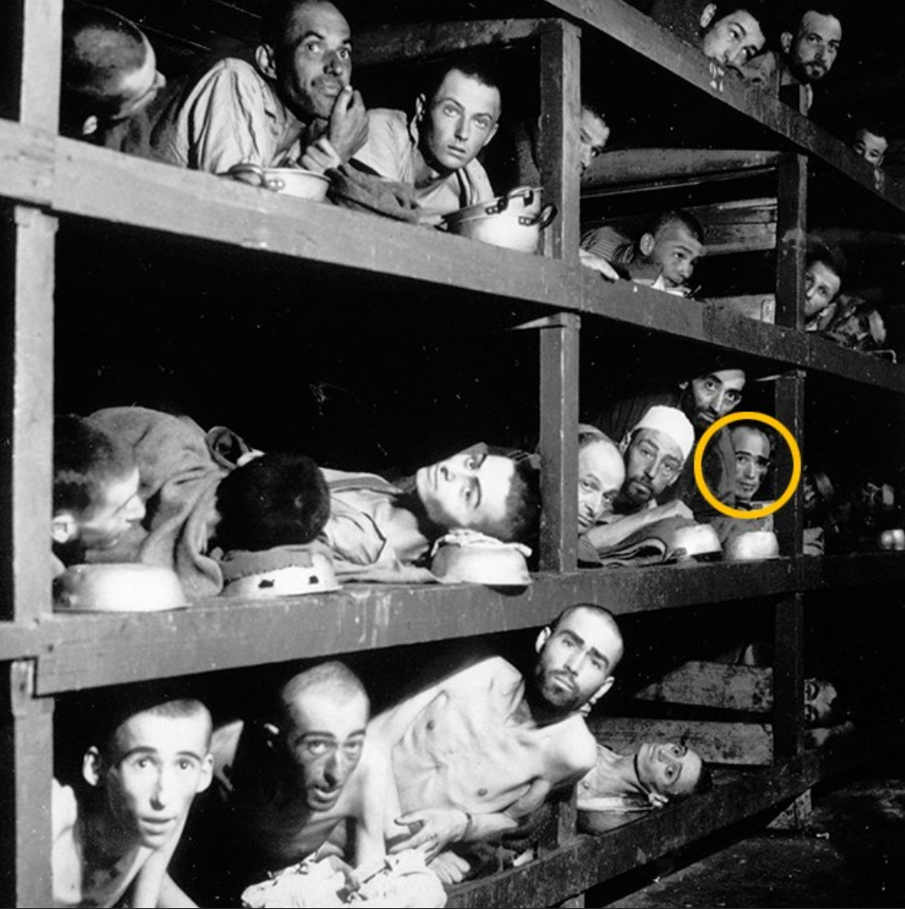

Baraquements
Je m'appelle Elie Weisel. Je suis né en 1928 dans une petite ville appelée Sighetu Marmației, en Transylvanie. Nous étions une famille juive très croyante. Mon père était respecté dans la communauté et ma mère veillait sur nous avec douceur. Je passais mes journées à étudier les textes religieux. Je voulais comprendre le monde et me rapprocher de Dieu. Notre ville était paisible. Les marchés étaient animés, les enfants jouaient dans les rues, et personne n’imaginait vraiment que la guerre qui ravageait l’Europe finirait par nous atteindre. Mais peu à peu, les rumeurs arrivèrent. On parlait d’un homme en Allemagne nommé Adolf Hitler. On parlait aussi des lois contre les Juifs. Beaucoup pensaient que tout cela resterait loin de nous. Ils avaient tort. En 1944, les soldats allemands arrivèrent dans notre ville. Très vite, les règles changèrent. Nous devions porter une étoile jaune cousue sur nos vêtements. Puis les Juifs furent rassemblés dans des quartiers fermés : les ghettos. Je me souviens du silence étrange dans les rues. La peur était partout, mais personne ne savait vraiment ce qui nous attendait. Un jour, les soldats vinrent nous chercher. Ils nous entassèrent dans des wagons à bestiaux. Les portes furent fermées. Nous roulâmes pendant des jours, sans eau, sans air, serrés les uns contre les autres. Personne ne savait où nous allions. Quand les portes du train s’ouvrirent, nous découvrîmes un endroit entouré de barbelés et de tours de garde. C’était le camp de Auschwitz-Birkenau. Des hommes en uniforme criaient des ordres. Nous fûmes séparés immédiatement. Les femmes d’un côté. Les hommes de l’autre. C’est la dernière fois que j’ai vu ma mère et ma petite sœur. Je ne savais pas encore qu’elles allaient mourir ce soir-là. Un prisonnier me murmura de mentir sur mon âge pour paraître plus fort. Sans cela, je n’aurais probablement pas survécu à la sélection. Chaque jour est une lutte pour rester en vie. Nous travaillons pendant des heures dans le froid. La faim nous torture Les gardes sont brutaux. Beaucoup meurent d’épuisement. Je reste avec mon père. Nous nous soutenons l’un l’autre. Mais la souffrance autour de nous est immense. Je vois des enfants, des vieillards, des familles entières disparaître. Peu à peu, je sens ma foi vaciller.
← Retour à l'enquête